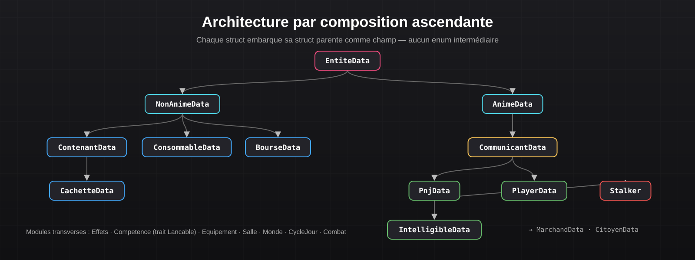
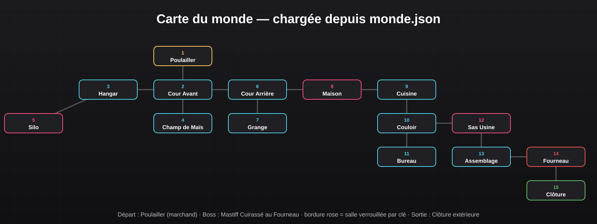

Documentation Technique
Moteur de jeu RPG en Rust — Moteur de RPG textuel data-driven et jeu Chicken Run
Sommaire
Objectif du projet
Concevoir un moteur de jeu de rôle textuel réutilisable en Rust, dont tout le contenu (carte, personnages, objets, boutique, ennemis) est externalisé en JSON, puis démontrer le moteur avec un jeu complet : Chicken Run.
Technologies utilisées
- Rust (édition 2024), Cargo
serde/serde_jsonpour la (dé)sérialisation des donnéesrandpour les éléments aléatoirescargo test(tests danstests/) etcargo doc- Git pour le travail en équipe
Architecture du moteur

Rust ne propose pas d'héritage : chaque struct intègre sa struct parente comme champ direct (composition ascendante), ce qui rend toutes les données accessibles sans enum intermédiaire. Les comportements communs sont exprimés par des traits.
| Module | Rôle |
|---|---|
Effets | buffs / debuffs de statistiques avec durée en tours |
Competence / Lancable | actions consommant du mana, via un trait commun |
Equipement | bonus passifs d'attaque / défense |
Salle / Monde | graphe de la carte (HashMap<u32, Salle>) chargé depuis JSON |
CycleJour | horloge à ticks alternant jour et nuit |
Combat | résolution au tour par tour (initiative, blocage, régénération de mana) |
Stalker | ennemi qui patrouille selon un circuit la nuit |
Extrait réel du trait implémenté par les compétences :
/// Interface standardisant le comportement de choses lancables
pub trait Lancable {
/// Vérifie si le mana disponible est suffisant pour lancer l'action.
fn est_lancable(&self, mana: u32) -> bool;
/// Exécute l'effet sur le lanceur et la cible.
fn lancer(&self, lanceur: &mut CommunicantData, cible: &mut CommunicantData);
}Données du jeu (JSON)
Le monde est décrit dans monde.json ; chaque salle déclare ses sorties, ses descriptions de jour et de nuit et ses événements (marchand, cachette, combat, clé, salle verrouillée…).
{
"id": 1,
"nom": "Poulailler Principal",
"sorties": { "nord": 2 },
"evenements": [
"Marchand",
{ "Analyse": { "information": "..." } }
]
}
Mécaniques de jeu
- Cycle jour / nuit : un déplacement coûte 2 ticks, une interaction 1 tick ; une phase dure 20 ticks. La nuit, le Stalker patrouille.
- Discrétion : se cacher la nuit ; la cachette protège si son niveau de discrétion dépasse la perception du Stalker.
- Combat : l'entité la plus rapide frappe en premier ; sans blocage, seule la moitié de la défense s'applique ; +5 mana par tour.
- Économie : or à ramasser, boutique (potions, équipements, outils d'évasion).
- Progression : clés à trouver pour déverrouiller le silo, la maison, l'usine puis la clôture finale.
Exemple de commandes utilisées
cargo run # lancer le jeu
cargo test # exécuter les 61 tests
cargo doc --no-deps --open # générer la documentationProblématiques rencontrées & solutions
- Absence d'héritage en Rust → composition ascendante des structs et traits pour les comportements partagés.
- Contenu du jeu figé dans le code → externalisation complète en JSON avec serde ; un scénariste peut modifier le monde sans recompiler.
- Robustesse au chargement → valeurs par défaut utilisées si un fichier JSON est absent ou invalide.